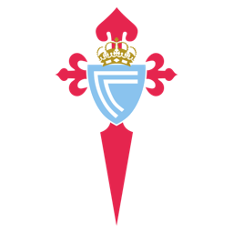
CVOrgullo gallego
RC Celta de Vigo
1923
Año de fundación del club
Célticos
Una breve historia
Fundado en 1923 en Vigo, el Celta es uno de los clubes históricos del noroeste de España. Sin títulos de Liga o Copa, ha compensado esa ausencia con temporadas europeas memorables y un estilo de juego siempre asociado a la calidad técnica.
Fieles a los colores
de Vigo
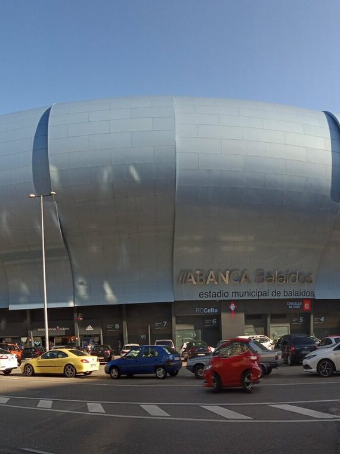
📷Foto pendiente
(celta-de-vigo-1.jpg)';" />
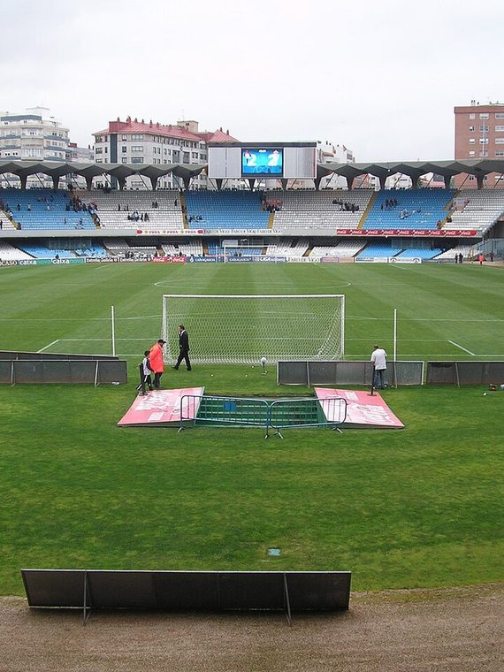
📷Foto pendiente
(celta-de-vigo-2.jpg)';" />
Títulos y logros
Momentos que hicieron historia
★
Semifinalista de la UEFA Europa League en 2016/17
★
Cuartos de final de la Recopa de Europa en 1994/95
★
Cantera histórica de grandes delanteros gallegos
La rivalidad
El duelo que enciende a la afición
Temporada 2026 / 27
Plantilla del primer equipo
Datos de ejemplo — reemplázalos con la plantilla real en data/teams.js.
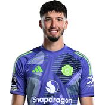
🧑';" /> Altay Bayindir Portero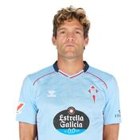
🧑';" /> M. Alonso Defensa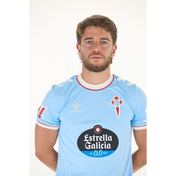
🧑';" /> Carreira Defensa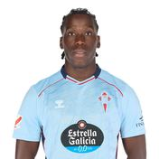
🧑';" /> Moriba Centrocampista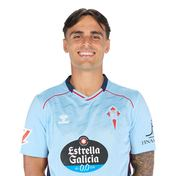
🧑';" /> M. Román Centrocampista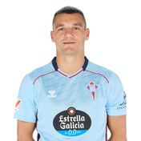
🧑';" /> Jutgla Delantero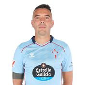
🧑';" /> Iago Aspas Delantero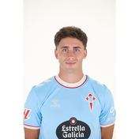
🧑';" /> P. Durán Delantero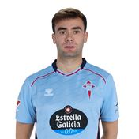
🧑';" /> Álvaro N.c. Defensa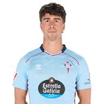
🧑';" /> H. González Centrocampista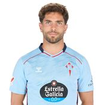
🧑';" /> Javi Rueda Defensa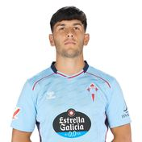
🧑';" /> Yoel Lago Defensa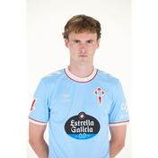
🧑';" /> Williot Centrocampista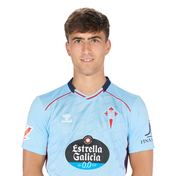
🧑';" /> Javi Rguez Defensa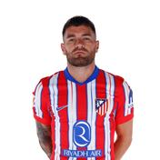
🧑';" /> Javi Galán Centrocampista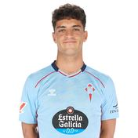
🧑';" /> Hugo A. Centrocampista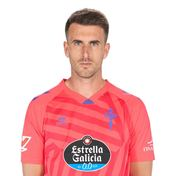
🧑';" /> Iván Villar Portero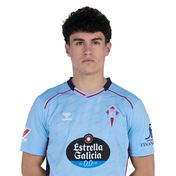
🧑';" /> Antañon Centrocampista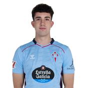
🧑';" /> Burcio Centrocampista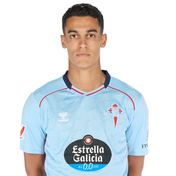
🧑';" /> El-Abdellaoui Delantero